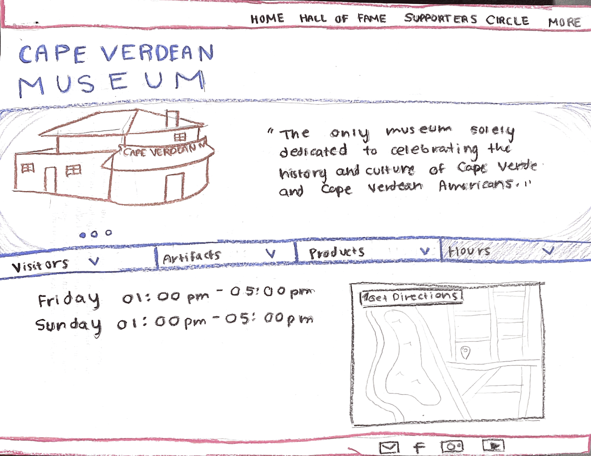

Preface: Cape Verdean Museum Webpage Redesign
The Cape Verdean Museum is a cultural institution dedicated to preserving and celebrating the history, art, and heritage of Cape Verdean people.
As a vital repository of Cape Verdean culture, the museum plays a crucial role in educating visitors and fostering a sense of pride within the its community in Rhode Island.
However, upon reviewing their webpage, I identified numerous issues such as unorganized hierarchy, poor contrast, and overall design inconsistencies. Recognizing
the importance of a user-friendly and visually appealing online presence for such a significant institution, I decided to undertake the redesign of their webpage.
In order to amend the accessibility issues posed by the current webpage design, I sought out to develop a modified and responsive redesign of the page. By implementing a more intuitive navigation system, enhancing contrast for readability, and ensuring a cohesive design, the revamped website aims to better showcase
the richness of Cape Verdean heritage and improve accessibility for all prospective visitors.
Step I: Identifying Usability Problems
In examining the Cape Verdean Museum's home webpage, I noticed several usability problems that are likely harming digital visitors' experiences.
These issues largely fell into three categories: lack of hierarchy, poor visual contrast, and unintuitive design. An analysis on WAIVE confirmed
my concerns to be true, as the errors returned coincided with the accessbility criteria I mentioned. The page had a very long
navigation bar with many different pages to choose from, none of which were organized in any particular order. Gray font on dark gray banners
make it difficult to distinguish text, particularly for readers with visual impairments. Finally, various sections were laid out with no direction
and with little labeling. Overall, I feel this makes the webpage very unintuitve for users to use as it does not offer a comprehensive layout for
navigating the page. I attempted to address some of these issues in the sketches below:
Across these various designs, I attempted to reorganize the navigation links and create a more cohesive flow throughout the webpage.
I identified key areas in the webpage that I felt were important to highlight in my designs, mainly: navigation bars, mission statements,
events schedule, hours/location, and outreach resources (social media, newsletter, etc).
Part II: Visual Redesign
Following the completion of the rapid sketches, I abstracted the features of my designs I liked the most and produced a final sketch.
Here I began to play with potential color schemes and adopted a more solid vision for my webpage.

I think my final sketch helped me develop a better sense of how I wanted to structure my webpage; however, creating wireframes
in Figma
allowed me to develop a better sense of the user experience. In doing so, I opted for a simpler home page where users
can find all of the information they need to get a sense of the Cape Verdean Museum with minimal scrolling/button-clicking. This
is reflected in my lofidelity wireframes:
In my lofidelity wireframes I made a few significant changes to the original webpage. I chose to organze the navigation bar into
two sub-navigation bars. The first containing links pertaining to outreach and support, including donation links. Below, I created
a logo for the museum and included a more general navigation bar with links to maneuver across different pages on the website. There
were a lot of links/pages on the home page, so I felt by doing this, and including a simple drop down menu, I was able to make it more
digestible. Additionally, I chose to remove the map at the bottom of the webpage and opted for a simple direction/hours section of the
page. I felt the map is most useful for organizations with multiple locations where individuals might want to choose that which is closest
to them; however, in this scenario I did not feel the map made too much sense so I got rid of it.
The top of the original website also contained
a series of fliers/videos for events, so I decided to combine them into an organized "Upcoming Events" sections where users can scroll
and view museum events along with their time and title. Other than that, I removed some seemingly unfinished concepts on the original webpage,
such as the "Future Products" section, and replaced it with a carousel beneath the header featuring photography, art, and other pieces from
the museum's collection. These changes then manifested themselves into my high fidelity wireframes:
Creating my hifidelity wireframes allowed me to experiment with many of the visual aspects of my design. I wanted to adopt a color
scheme with more contrast than that which is present in the original website. Luckily, the Cape Verdean flag offered an aesthetically
contrasting color scheme around which I built my webpage. I also incorporated some accessiblity features, such as underlining or chaning
colors/size during hover interactions, in order to make the user experience more intuitive. Many of these details are outlined in my style guide:

Part III: Responsive Redesign
Having followed a robust design process, I implemented my wireframe on an actual webpage in HTML/CSS. My page looks pretty much
exactly like my hifidelity wireframes with some minor tweaks. I ended up opting for a scrolling feature on the upcoming events
which transtlatedly nicely across desktop and smartphone screens. Therefore, there was no need to switch the event layout from columns to rows.
I also had to change some font sizes after performing some WAIVE analyses which I discuss later on. I have included a screenshot of my cape-verdean-museum-webpage
below:
I made several design choices to maximize accessbility. This included responsive buttons and links (ex: upcoming event border changes
color upon hover). The choice of large font and contrasting colors makes it much more readible than the original, and the overall hierarchy
of the webpage makes more sense. I tried my best to follow a user's journey: navigation bar -> Museum information -> Events -> how/when to get there.
Testing and Shortcomings
Once I completed implementing my webpage in HTML/CSS, I proceeded to review its responsiveness and accessibility through a series of
tests. I loaded the webpage on various screen sizes and altered various page attributes, such as text size and language. Using tools, such
as WAVE and HTML Validator, I ran analyses on my page. It turned out to perform much better than the original webpage, accounting for
hierarchy, accessbility, and responsiveness demands.
The tests did reveal a few issues in my design, most of which I responded to. Originally, I did not attach aria labels to my main components
to which I reacted by applying them adequately. WAVE in particular had an issue with the size of some of my font, which required me
to increase the font size and change some of the alignment for certain parts of the page (mainly Hours/Location). Concerns were also raised
in regards to some of the prototype buttons as their lack of funcitonality can be misleading; however, for the purpose of the assignment I
think those can be overlooked.
There were certain details I was unable to remedy. Under each Upcoming Event slot, I hoped to left align the captions for optimal
readability; however, my CSS would not allow me to do so for some reason. Additionally, when the screen is very thin, the navigation bar
links spill over and increase the size of the container. This slightly overlaps with the image carousel prototype below and I was
unable to determine how to fix this. I have linked my handin repository and my responsive redesign repository.